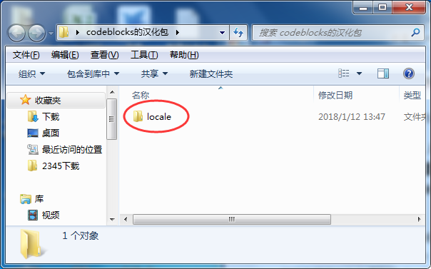
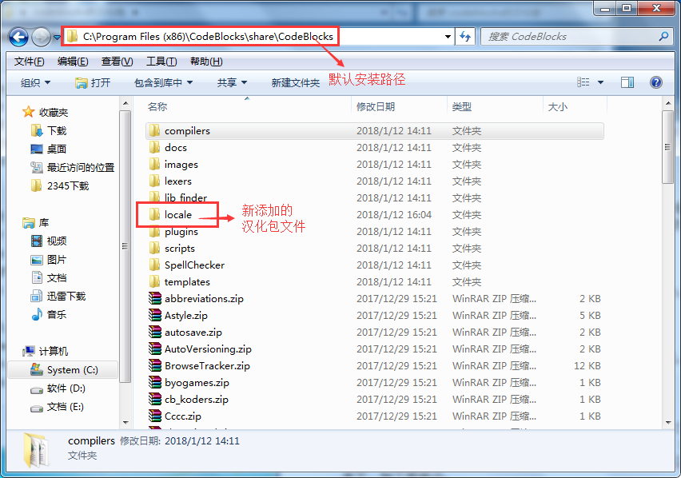
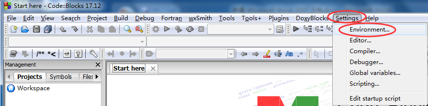
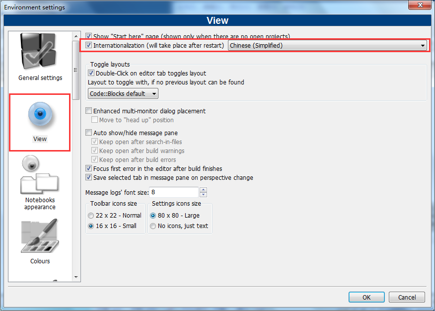
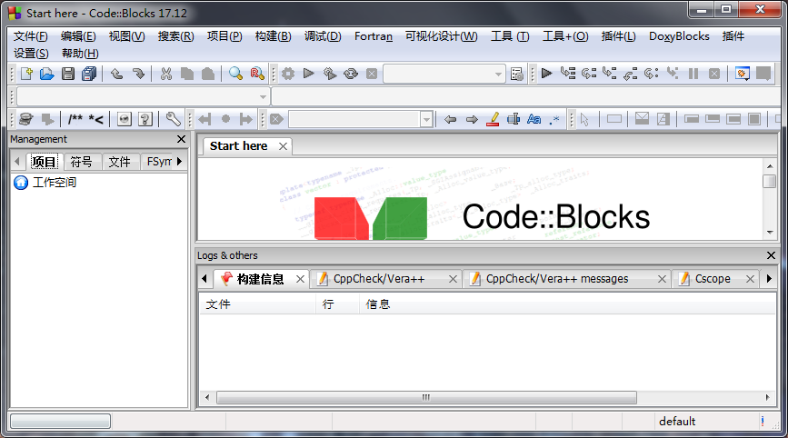
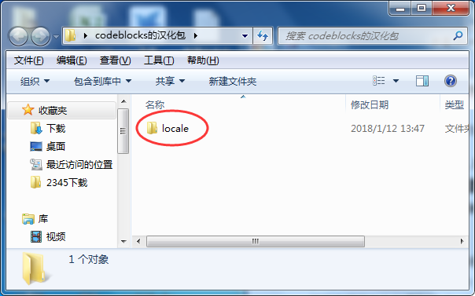
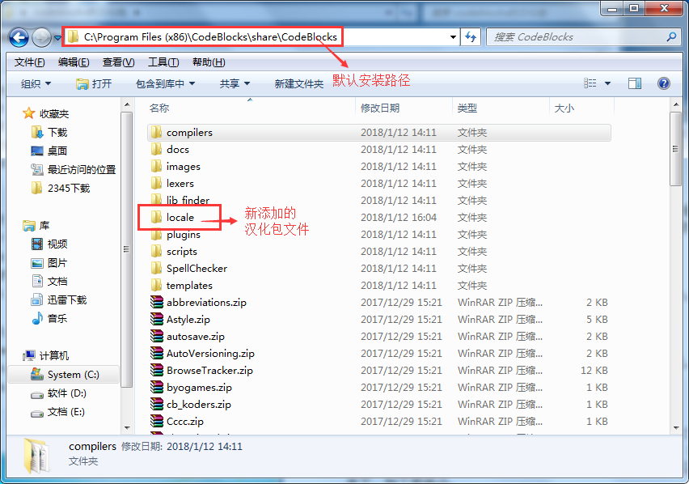
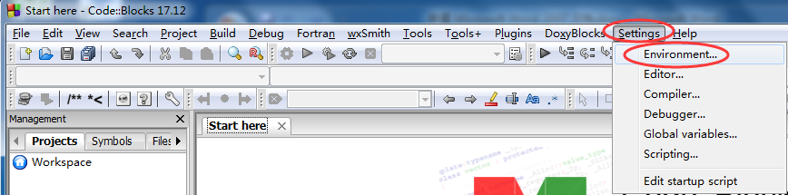
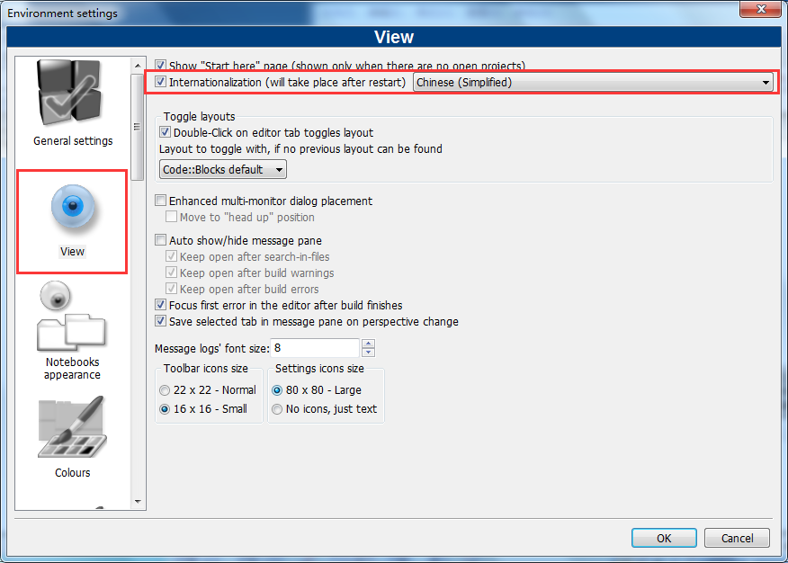
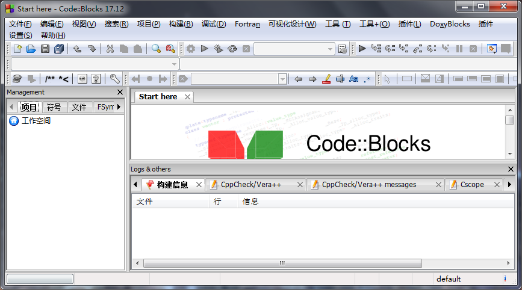

Code::Blocks汉化教程（附带汉化包）
由于官方下载的 CodeBlocks 全部都是英文版，本教程中给大家推荐的 CodeBlocks 17.12 版本也是官方英文版，所以本节给大家介绍：如何将英文版设置为简体中文版。
百度网盘：
链接: https://pan.baidu.com/s/1sniGc01 密码: 7e9m

2) 进入 CodeBlocks 安装目录（其默认安装目录为 C:\Program Files (x86)\CodeBlocks），依次进入 share --> CodeBlocks 文件夹，然后将解压汉化包得到的 locale 文件夹，复制到 CodeBlocks 文件夹下，如下图所示：

如果上述过程，你都没有打开 CodeBlocks，这个时候你直接打开，应该就可以看到，你的 CodeBlocks 已经汉化成功啦。如果还没有成功，继续以下操作。

4) 会弹出用于设置 CodeBlocks 的对话框，如下图所示：

选择 View 选项，勾选 Internationalization 选项，同时选择其中的 Chinese(Simplified)。然后点击 OK 按钮。
设置完成后，直接重新启动 CodeBlocks，此时 CodeBlocks 会出现一个提示框，提示你是否保存更改，选择保存即可。
5) 再次启动 CodeBlocks，你会看到全新的汉化的 CodeBlocks，虽然没有完全汉化，但起码不会影响日常的正常使用。

下载CodeBlocks汉化包
首先，大家需要下载一个 CodeBlocks 汉化包，下载地址为：百度网盘：
链接: https://pan.baidu.com/s/1sniGc01 密码: 7e9m
提示：汉化包大小不足 200KB，建议使用百度网盘下载。
汉化CodeBlocks
1) 汉化包下载完成后，是一个压缩包，将其解压，其中包含有一个 locale 文件夹，如下图所示，这是我们需要的。

更改CodeBlocks设置
3) 打开 CodeBlocks，选择 “Settings --> Environmen”，如下图所示：

设置完成后，直接重新启动 CodeBlocks，此时 CodeBlocks 会出现一个提示框，提示你是否保存更改，选择保存即可。
5) 再次启动 CodeBlocks，你会看到全新的汉化的 CodeBlocks，虽然没有完全汉化，但起码不会影响日常的正常使用。

关注公众号「站长严长生」，在手机上阅读所有教程，随时随地都能学习。内含一款搜索神器，免费下载全网书籍和视频。

微信扫码关注公众号